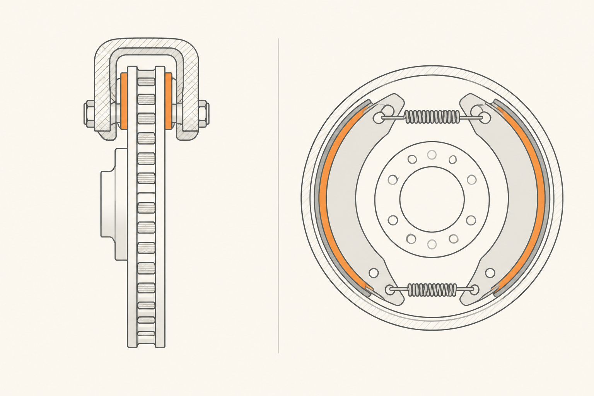

Disco vs tambor: las dos geometrías de la fricción
La píldora anterior dejó la fuerza llegando hasta la rueda. Ahora viene la pregunta de geometría: ¿cómo se aplica esa fricción exactamente? Hay dos respuestas históricas, dos formas de "agarrar" la rueda con una pieza fija. Una ganó la guerra para casi todo el coche, pero la otra resiste en un sitio concreto y por buenas razones.
Las dos respuestas
El freno de disco es lo que probablemente imaginas: un disco metálico que gira con la rueda, atrapado entre dos pastillas que se cierran sobre él como una pinza. Las pastillas atacan el disco desde fuera, en una zona expuesta al aire.
El freno de tambor es lo opuesto: un tambor metálico (una "lata" hueca) que gira con la rueda, y dentro del tambor unas zapatas curvadas que se separan empujando hacia afuera y rozan la cara interior del tambor. La fricción ocurre dentro, en una zona cerrada.

Por qué el disco ganó casi toda la guerra
Recuerda la idea raíz: frenar es generar calor y luego disipar ese calor al aire. Aquí está la diferencia decisiva entre ambos sistemas:
El disco está al aire libre. El calor que se genera tiene casi toda su superficie expuesta para irse. Y los discos modernos son ventilados: dos caras separadas por aletas internas que actúan como ventilador, soplando aire por dentro mientras la rueda gira. Disipan calor a saco.
El tambor, en cambio, encierra todo el calor en un volumen cerrado. La cara que roza está dentro, sin aire. El sistema entero acumula temperatura y fácil llega a saturarse — el famoso fading — antes que un disco equivalente. En frenadas duras o sostenidas, el disco es claramente superior.
Entonces, ¿por qué sigue habiendo tambores?
Por dos razones muy concretas, ambas en el eje trasero de coches utilitarios:
Una es el coste. En un coche económico, el eje trasero hace solo entre el 20% y el 30% del trabajo de frenada — el delantero hace el resto porque el coche se inclina hacia adelante al frenar. Si el trasero apenas se exige, un tambor barato cumple sin que el cliente note la diferencia.
La segunda es el freno de mano. Implementar un freno de estacionamiento dentro de un tambor es trivial: un cable tira de las zapatas y ya está. En un freno de disco hay que añadir un mecanismo de aparcamiento aparte, más caro. Para un coche utilitario, el tambor trasero resuelve dos problemas a la vez por menos dinero.
Subtipos de disco: macizo, ventilado, perforado, cerámico
No todos los discos son iguales:
Macizo: una pieza única, sin canales. Más barato, peor refrigeración. Típico del eje trasero.
Ventilado: dos caras separadas por aletas internas. El aire circula por dentro al girar. Estándar en el eje delantero de prácticamente todo coche moderno.
Perforado o ranurado: agujeros o ranuras en la cara del disco. La función técnica real es ayudar a expulsar gases que se forman entre pastilla y disco al frenar muy caliente, y romper el agua en mojado. La función real-real en muchos coches deportivos es estética y de marca. En uso normal mejoran poco; en pista, sí.
Cerámico (carbono-cerámica): disco hecho de cerámica reforzada con fibra de carbono. Mucho más ligero, soporta temperaturas brutales, dura muchísimo. Y cuesta una pequeña fortuna. Se ven en deportivos de altas prestaciones, no en uso diario.
La pinza: fija vs flotante
Sobre el disco vive la pinza, que es la que aprieta las pastillas. Hay dos tipos.
La pinza fija tiene émbolos a ambos lados del disco. Cada lado empuja su pastilla. Es más cara, más rígida y da mejor tacto. Verás varias en deportivos: pinzas grandes, pintadas, con 4 o 6 émbolos por rueda.
La pinza flotante tiene émbolos solo en un lado. Cuando ese lado empuja su pastilla contra el disco, toda la pinza se desliza sobre unas guías y arrastra la pastilla del otro lado para apretar también. Más simple, más barata, suficiente para uso normal. Es lo que llevará el 90% de los coches en la calle.
La frase que te llevas
El disco gana en disipación y modulación, el tambor sobrevive donde el coste y el freno de mano lo justifican (eje trasero de utilitarios). En tu coche cada eje puede llevar la geometría que el fabricante ha decidido que basta.
Hasta aquí hemos visto los dos lados duros de la fricción. La siguiente píldora se centra en la pieza blanda — la que se gasta a propósito — y por qué importa más de lo que parece: la pastilla.
fácil ¿Por qué un freno de disco se enfría mejor que un freno de tambor, hablando solo de geometría?
medio Si los discos son mejores, ¿por qué Volkswagen sigue montando tambores en el eje trasero del Polo o el T-Cross de acceso?
Por dos razones combinadas:
1) El eje trasero apenas trabaja en frenada (el coche se inclina hacia delante y el peso recae sobre el delantero). Un tambor económico es de sobra para ese 20-30% del trabajo, especialmente en un utilitario que no se exige en circuito.
2) Implementar el freno de estacionamiento dentro de un tambor es mucho más simple y barato que en un disco. Dos beneficios por una sola pieza.
El cliente no nota diferencia en uso urbano, y el fabricante mejora el margen sin penalizar la seguridad. Cuando el coche sube de gama, el tambor desaparece — es un marcador clarísimo de gama.
reto Un cliente CUPRA Born trae el coche al taller diciendo "los discos traseros se me oxidan en cuanto deja de circular un par de días". ¿Es un defecto del coche o explicable? ¿Qué le dirías?
Es explicable y conocido, no un defecto. El CUPRA Born usa frenada regenerativa intensa: la mayor parte de la deceleración se hace con el motor eléctrico actuando como generador, no con los frenos mecánicos. Eso significa que las pastillas y discos traseros prácticamente no se usan en conducción normal. El óxido superficial aparece porque, sin desgaste habitual, una pequeña capa de óxido se acumula en la superficie del disco al estar parado a la intemperie.
La buena noticia: en cuanto frenas con cierta firmeza un par de veces, las pastillas raspan ese óxido superficial y el disco vuelve a estar limpio. No afecta a la seguridad ni acorta la vida útil de forma apreciable.
La nota CX: anticipa esta conversación a clientes que vienen de combustión. Decirles antes — "es normal, no te preocupes si lo ves después de unos días parado" — convierte una posible reclamación en una explicación que les hace sentir cuidados. La regenerativa la veremos a fondo en la píldora 6.